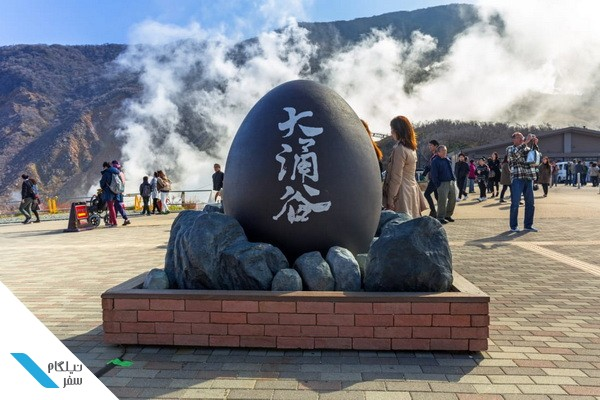
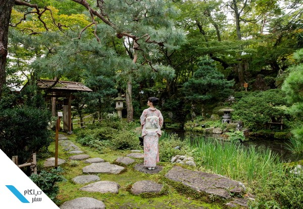
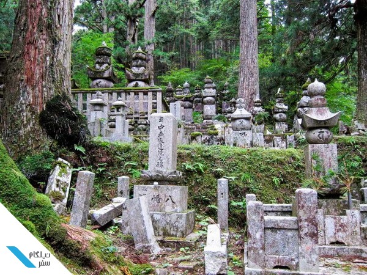
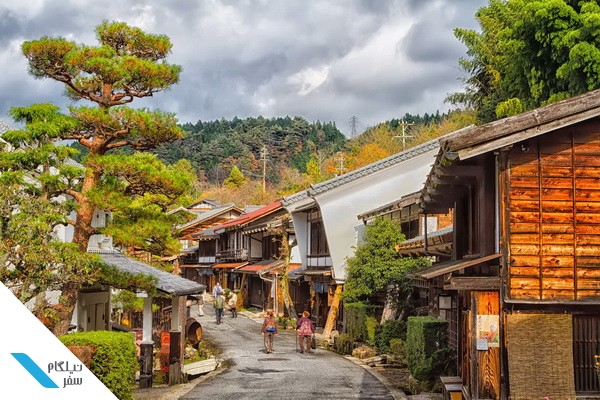

سفر به سرزمین آفتاب تابان: بهترین شهرهای ژاپن را کشف کنید!
موضوع امروز مقاله نیلگام، معرفی بهترین شهرهای ژاپن است که در ادامه به بررسی این شهرها میپردازیم.
ترکیب تاریخ غنی با فرهنگ مدرن، غذاهای متنوع، سالم و هیجانانگیز، شهروندانی منظم و مودب، وجود انواع روشهای حمل و نقل و جاذبههای توریستی، ژاپن را به یکی از محبوبترین مقاصد گردشگری دنیا تبدیل کرده است. اخیراً بنا بر جدیدترین آمار وبسایت معتبر Economist Intelligence Unit شهر اوساکا و توکیو در میان ۱۰ شهر زنده و پر جنب و جوش جهان قرار گرفتهاند.
اما زمانی که تصمیم گرفتید به ژاپن سفر کنید، کدام شهر را برای گشت و گذار و گردش انتخاب میکنید؟ واقعیت این است که جواب واحدی برای این سؤال وجود نداشته و نسبت به سلیقه و شرایط مسافر، پاسخ به آن متغیر است. آیا دوست دارید در فضای کاملاً مدرن و شلوغ شهری قرار داشته باشید یا در میان سکوت طبیعت تعطیلات خود را بگذرانید؟
آیا ترجیح میدهید مدام مشغول خرید برندهای معروف از فروشگاههای بزرگ و مطرح بینالمللی باشید و یا از اماکن تاریخی و باستانی بازدید کنید؟ آیا دوست دارید تا در میان ماهیان به شنا بپردازید و یا اینکه به گوزنهای دوست داشتنی ژاپنی غذا دهید؟ برای اینکه بتوانید برای چنین سؤالاتی پاسخ مناسب پیدا کرده و تصمیم نهایی برای انتخاب شهرهای موردنظر خود در ژاپن را بگیرید، با ما در ادامه مطلب همراه باشید.

مطلب مرتبط:
بهترین شهرهای ژاپن
1. کیوتو
اولین مورد از لیست بهترین شهرهای ژاپن، کیوتو است. اگر تنها برای یک مقصد و شهر در ژاپن زمان دارید، کیوتو را انتخاب کنید. این شهر همان ژاپن سنتی است که همیشه تصورش را میکردید، با ورود به این شهر میتوانید گیشاها با کیمونوهایی روشن که از خانههای چای چوبی به بیرون میآیند، جنگلهای بامبو، معابد و اماکن مقدس در رنگهای طلایی، نقرهای و قرمز روشن و باغهای ذن را بازدید کرده و از حضور در جشنهای چای دلپذیر و بازارهای متنوع آن لذت ببرید.
برای دوری از بخش مدرن و شهری کیوتو بهتر است از مرکز شهر فاصله گرفته و به سمت کوهستان و محلههای اطراف آن حرکت کنید. در این بخش از شهر شما با خیابانهای سنگی باریک، خانههای چوبی قدیمی و راهبانی با لباسهای گشاد روبرو شده و صدای دعا و ناقوس را از بسیاری از معابد خواهید شنید.
گیون میزبان گیشاهاست، هاگاشیاما چندین معبد زیبا برای گشت و گذار دارد و آراشیاما واقع در تپههای غربی، بهعنوان یکی از سنتیترین محلههای این شهر، خانه جنگلهای بامبو، معابد خاص و محل زندگی میمونها محسوب میشود. از آنجایی که کیوتو یکی از شهرهای توریستی ژاپن است، پیشنهاد میکنیم برای اجتناب از رویارویی با ازدحام و شلوغی گردشگران، در اوایل صبح از معابد معروف کیوتو بازدید کنید.
نکات مهم در سفر به کیوتو
در سفر به کیوتو که یکی از بهترین شهرهای ژاپن است، انجام این کارها را فراموش نکنید:
- گذر از میان دروازههای قرمز و نارنجی رنگ و قدیمی torii معبد فوشیمی ایناری
- بازدید از معبد طلایی در کینکاکوجی و خرید از دستگاههای خرید خودکار آن
- سفر با قطار به روستای کیبونه و حرکت در سرتاسر دره و بازدید از معبد زیبای کورامادره
- گشت شبانه در معبد جادویی و محوطه خاص یاساکا جینجا پس از گشت و گذار در خیابانهای شلوغ گیون
- قدم زدن در مسیر فلاسفه
- امتحان کردن طعم انواع غذاهای ذن بودایی در معبد تنریوجی
- تجربه آرامش در معبد اوتاگی ننبوتسوجی به دور از شلوغیهای شهر
- بازدید از شکوفههای گیلاس زیبای کیوتو در صورت حضور در اواخر مارچ و یا اوایل آپریل.
بیشتر بخوانید:
2. توکیو
دومین شهر از بهترین شهرهای ژاپن، توکیو نام دارد. اگر کیوتو مرکز سنتی ژاپن محسوب شود، شهر توکیو همتای فوق مدرن آن خواهد بود. این شهر جایی است که در آن با برجهای بلند، گذرگاهها و پیادهروهای شلوغ، مدلهای لباس به روز و استایل فشن جوانان، و انواع و اقسام رستورانها و غذاهای خوشطعم روبرو خواهید شد. توکیو خانه فعالیتهای عجیب و غریب نیز به شما میرود.
از کافههایی با تم گربه، جغد، انواع خدمتکار، روبات و بز گرفته تا اجراها و نمایشهای احساسی و بازیهای ویدیویی و آنلاین، کازپلی بالماسکه و مسابقات کارتینگ، همه در این شهر نهفته است. اگر تنها کاری که در توکیو بهعنوان توریست انجام میدهید خوردن باشد، حتی اگر گیاهخوار باشید تجربه فوقالعادهای را خواهید داشت.
در نخستین بازدید خود مطمئناً به خاطر بزرگی و گستردگی توکیو در قیاس با کیوتو نمیتوانید تمام فعالیتهای جذاب این شهر را تجربه کنید. اما در بازدیدهای بعدی زمان بیشتری برای انجام انواع فعالیتهای توریستی این شهر جذاب خواهید داشت. با سفر به توکیو انجام این کارها را فراموش نکنید:
- مسابقات کارتینگ یا به اصطلاح go-kart را در جادههای واقعی با لباس کارکترهای محبوب بازیهایی نظیر کراش تجربه کنید.
- در فضا و محیط خاص Memory lane و در یکی از رستورانهای کوچک این محدوده غذا میل کنید.
- به طور رایگان از ساختمان دولتی و معروف شهرداری در شینجوکو خط افق آسمان توکیو در شب را مشاهده کنید.
- از مسیر عبور و مرور مشهور شیبویا گذر کنید.
- از خیابان مد و فشن متفاوت تاکشیتا در هاراجوکو دیدن کنید.
- در صورت امکان و داشتن موجودی کافی به پارک دیزنی DisneySea و دیزنیلند بروید.
- با حضور در رستوران روباتیک عجیب توکیو، روزی متفاوت و خارج از تصور را تجربه کنید.
- با رفتن به موزههای هنرهای دیجیتال (TeamLab Borderless) در رنگهای مختلف غوطهور شوید.
** 10 تا از بهترین غذاهای توکیو را در وبلاگ نیلگام بخوانید **
3. تاکایاما
تاکایاما رتبه سوم بهترین شهرهای ژاپن را مال خود کرده است. تاکایاما شهری کوچک و کاملاً جذاب در کنار و لبه کوههای آلپ ژاپن است و یکی از کم بازدیدترین شهرهای ژاپن به شمار میرود. با سفر به این شهر میتوانید در مرکز تاریخی شهر در میان خانههای سنتی چوبی، معابد رنگارنگ، درختانی با چیدمان منظم و پلهایی با رنگ قرمز روشن به گشت و گذار بپردازید. با سفر به تاکایاما انجام این کارها را فراموش نکنید:
- قبل از هجوم گردشگران، در اوایل صبح از شهر قدیمی تاکایاما بازدید کنید.
- از بازارهای صبح میوههای تازه و خوشطعم خریداری کنید.
- از غرفههای خیابانی غذای میتراشی دنگو (کوفته برنجی پخته شده در سویا) خریداری کرده و بخورید.
- از موزه Festival Floats Exhibition Hall بازدید کنید.
- از روستای Hida Folk و خانههای سنتی با سقف پوشالی دیدن کنید.
- در حومه شهر به دوچرخهسواری بپردازید.
4. هاکونه
چهارمین مورد از بهترین شهرهای ژاپن، هاکونه نام دارد. کوه فوجی یکی از پربازدیدترین جاذبههای توریستی ژاپن محسوب میشود، اما این نماد ژاپنی دیدنی در برخی اوقات از سال توسط ابرها و شرایط جوی از نظرها پنهان است. عموماً شما میتوانید از نقاطی نظیر کاواگوچیکو این کوه زیبا را نظاره کنید، اما دسترسی به هاکونه از توکیو راحت بوده و علاوه بر امکان بازدید از کوه فوجی، فعالیتهای جذاب دیگری برای انجام دادن وجود دارد.
هاکونه جایی است که در آن میتوانید با استفاده از وسایل نقلیه مختلف نظیر قطار، اتوبوس، کشتی و تلهکابین مناظر متفاوتی از مناظر طبیعی و کوه فوجی را بازدید کنید. با سفر به هاکونه انجام این کارها را فراموش نکنید:
- بلیط Hakone Free Pass را خریداری کرده و با قیمتی به صرفه و اقتصادی از وسایل نقلیه Hakone Loop برای ۲ تا ۳ روز استفاده کنید.
- از کنار دریاچه و یا از داخل تله کابین از کوه فوجی دیدن کرده و عکس بگیرید.
- یک یا چند تخممرغ سیاه پختهشده در چشمههای طبیعی گوگردی آتشفشان اواکودانی را بچشید (ظاهر این تخممرغها برای برخی از افراد چندان جذاب نیست، اما ژاپنیها برای آن سر و دست میشکنند)
- در اسپا و آبگرم طبیعی آنسن، ریلکس کرده و حمام کنید.
- در یک اتاق تاتامی کاروانسراهای سنتی ریوکان اقامت یافته و از محیط خاص و طعم غذاهای تزئینشده آن لذت ببرید.
- از مجسمهها و آثار دیدنی گالری فضای آزادHakone Open Air دیدن کنید.

پیشنهاد مطالعه:
5. کانازاوا
کانازاوا یکی از بهترین شهرهای ژاپن برای بازدید است که معمولاً گردشگران کمی قدم به این شهر میگذارند. از آنجایی که محبوبیت شهر کیوتو مدام در حال افزایش است، انتخاب کانازاوا بهعنوان مکانی ساکتتر برای تجربه بازدید از منطقه گیشاها و ساختمانهای چوبی، گزینه مناسبتری خواهد بود.
با سفر به این شهر شما میتوانید از یکی از زیباترین باغهای کشور، قلعهای جذاب و چندین موزه بازدید کنید. با سفر به کانازاوا انجام این کارها را فراموش نکنید:
- از یکی از ۳ باغ مطرح و مشهور ژاپن یعنی کنروکو-این Kenroku-en بازدید کنید.
- به کاوش و گشت و گذار در خانههای چای چوبی مناطق گیشا نظیر هیگاشی چایا و مناطق آرامتر نظیر کازوماچی و نیشی چایا بپردازید.
- جشن چای سنتی باغهای خاص گیوکوسن Gyokusen-en را تجربه کنید.

6. نیکو
Nikko یک شهر معبدی ثبتشده در لیست میراث جهانی یونسکو است که در منطقهای کوهستانی در شمال ژاپن و چند ساعتی توکیو واقع شده و از هوایی خنک و رنگهای زنده پاییزی برخوردار است. همچنین معابد و اماکن مقدس این شهر با درهایی از جنس سنگ قرمز و فانوسهای سنگی پوشیده از خز در تمام دامنه سرسبز کوه نیکو گسترده شده است.
جذابیت توریستی اصلی نیکو معبد توشوگو یک ساختمان چندمنظوره با بیش از چندین ساختمان تزئینشده طلایی و قرمز در میان درختان کهن و عظیم سرو است. عموماً جمعیت گردشگران میتواند از لذت بازدید از این معبد بکاهد، از این رو میتوانید در صورت تمایل از سایر معابد نیکو دیدن کنید.
با سفر به یکی از بهترین شهرهای ژاپن، نیکو، انجام این کارها را فراموش نکنید:
- بازدید اول صبح از معبد توشوگو برای اجتناب از ازدحام جمعیت
- انجام بازی در فضای جذاب فوتاراسان جینجا
- گشت و گذار در تایونبیو Taiyuinbyo
- کوهنوردی و بازدید از معبد آرامشبخش تاکینو
- عکاسی از پل قرمز رنگ و زیبای شینکیو
- خرید غذای دانگو (کوفته برنجی سیخی گریلشده) از غرفههای خیابانی
- تجربه طعم سوشی ژاپنی در کومکیچی کوزوشی
مقالات مشابه:
7. کویاسان
رتبه هفتم در مطلب بهترین شهرهای ژاپن، شهر کویاسان است. کوهستان کویا Koya-san یکی از جذابترین مکانها برای تجربه چهره سنتی ژاپن است. این شهر معبدی منزوی و مقدس در کوهستانهای سرسبز و پوشیده از جنگل کانسای قرار گرفته و یکی از بهترین نقاط برای چشیدن طعم و تجربه زندگی بهعنوان یک راهب است. (شما میتوانید با اقامت در یک شوکوبو و یا همان اقامتگاه معبد به این مهم دست پیدا کنید).
شما این امکان را دارید تا به سادگی بعد از گشت و گذار در گورستان جنگلی دگرجهانی اوکونین Okunoin به اتاق تاتامی خود در معبد برگشته، در حمام عمومی و طبیعی آنسن ریلکس کنید و از وعده غذای گیاهی بودایی شوجین ریوری لذت ببرید و در عین حال صبح زود بیدار شده و به همراه راهبان معبد در مراسم دعا و مدیتیشن بودایی شرکت نمایید.
تجربه اقامت در شهر معبدی کویاسان میتواند بسیار لذتبخش و آرامشبخش باشد و از نگاهی بسیاری از افراد ارزش دست کشیدن از شهرهای اوساکا و کیوتو را خواهد داشت.

8. تسوماگو Tsumago
تسوماگو یک روستای خوشمنظره سنتی و کوهستانی در دره کیسو است که جزء بهترین شهرهای ژاپن محسوب میشود. تسوماگو یکی از دستنخوردهترین شهرهای ژاپن است و با ورود به آن این طور احساس خواهید کرد که به زمان گذشته و خیابانهایی عاری از ترافیک و اقامتگاههایی زیبا و چوبی برگشتهاید. در حدود ۳۰۰ سال پیش یعنی دوران Edo، تسوماگو یک توقفگاه بین کیوتو و ادو (توکیو امروزی) محسوب میشده است.
هنوز هم میتوانید ظرف ۲ تا ۳ ساعت بخشی از این مسیر را به سمت دهکده ماگومه بپیمایید.

مقالات خواندنی نیلگام:
9. نارا
پیش از این نارا بهعنوان نخستین پایتخت دائمی ژاپن شناخته میشد و به همین خاطر از تعداد زیادی از گنجینههای تاریخی ثبتشده در سازمان یونسکو برخوردار است. این شهر یکی از بهترین شهرهای ژاپن محسوب شده و بازدید از معابد و گوزنهای وحشی پارک نارا حس خوبی را به شما القا خواهد کرد.
دایبوتسو-دن یا همان سالن بودای بزرگ در تودایجی بهعنوان یکی از جذابیتهای اصلی توریستی نارا، یکی از بزرگترین ساختمان چوبی در دنیا بوده و مناظر وسیع و متفاوت آن غیرقابل وصف است. درون این ساختمان مجسمه طلایی و برنزی بودا با ارتفاع ۱۵ متر و قدمتی متعلق به سال ۷۵۱ میلادی قرار گرفته است.
10. اوساکا
آ[رین شهر از بهترین شهرهای ژاپن، اوکاسا نام دارد. از نگاه بسیاری از گردشگران ژاپن، بازدید از شهر اوساکا که بعضی از افراد به آن اوزاکا میگویند، جزو بایدها بوده و مسئلهای حتمی است. محوطه پر جنب و جوش پوشیده از تابلوهای رنگارنگ نئونی دوتونبوری، غذاهای فوقالعاده ژاپنی، مردم خونگرم، قیمتهای مناسب و اقتصادی و وجود اماکنی نظیر Harry Potter World در استودیو یونیورسال ژاپن، محبوبیت این شهر را چند برابر کرده است.
اگر موفق به دریافت ویزای توریستی ژاپن شدید اما محدودیت هزینه یا زمان برای گشت و گذار در این کشور دارید، شهرهای اوساکا و توکیو بهعنوان مقاصدی جذاب و مدرن به شما پیشنهاد میشود. بر همین اساس، چنان چه پرواز شما در فرودگاه کانسای فرود میآید، میتوانید در صورت تمایل یک یا دو شب را در شهر زیبای اوساکا بگذرانید و در صورت مدیریت مناسب زمان از شهر دیدنی کیوتو نیز بازدید کنید.
با اینکه بسیاری از افراد به ژاپن بهعنوان کشوری کوچک نگاه میکنند، اما در عمل، سفر و بازدید از جذابیتهای متنوع آن در شهرهای مختلف به ماهها زمان نیاز خواهد داشت. علاوه بر شهرهای اشاره شده در بالا، بازدید از شهرهای ساپورو (هوکایدو)، یوکوهاما (کاناگاوا)، ناگویا (آیچی)، کوبه (هیوگو)، هیروشیما و اوکیناوای ژاپن نیز خالی از لطف نبوده و شما را با آداب و رسوم و جذابیتهای متعدد توریستی شهرهای مختلف ژاپن آشنا خواهد کرد.
برای اطلاعات بیشتر با ما تماس بگیرید.
** اخذ ویزای ژاپن با شرکت مهاجرتی نیلگام: سفری به سرزمین آفتاب تابان **
آیا رویای سفر به ژاپن، کشوری با فرهنگ غنی، مناظر خیره کننده و فناوری پیشرفته را در سر میپرورانید؟ اگر به دنبال راهنمایی جامع و قابل اعتماد برای اخذ ویزای ژاپن هستید، شرکت مهاجرتی نیلگام همراه شماست. ما در نیلگام با سالها تجربه و تخصص در امور مهاجرتی، به شما کمک میکنیم تا با خیالی آسوده مراحل اخذ ویزای ژاپن را طی کرده و سفری به یاد ماندنی به این کشور زیبا داشته باشید.
چرا ژاپن؟
ژاپن کشوری با جاذبههای گردشگری بیشمار است. از معابد باشکوه و باغهای آرامشبخش گرفته تا کلانشهرهای پر جنب و جوش و کوههای سر به فلک کشیده، ژاپن برای هر سلیقهای چیزی برای ارائه دارد. در این سرزمین، سنت و مدرنیته به زیبایی در هم آمیختهاند و میتوانید فرهنگ منحصربهفرد ژاپنی را از نزدیک تجربه کنید.
علاوه بر جاذبههای گردشگری، فرصتهای شغلی و تحصیلی عالی، کیفیت زندگی بالا و مردمی خونگرم و مهماننواز، ژاپن را به مقصدی ایده آل برای مهاجرت تبدیل کرده است.
انواع ویزای ژاپن
برای سفر به ژاپن، بسته به هدف سفر خود، به ویزای خاصی نیاز دارید. انواع اصلی ویزای ژاپن عبارتند از:
- ویزای توریستی: برای گردشگران و بازدیدکنندگان صادر میشود.
- ویزای تجاری: برای افرادی که به قصد تجارت و کار به ژاپن سفر میکنند، صادر میشود.
- ویزای کاری: برای افرادی که قصد کار در ژاپن را دارند، صادر میشود.
- ویزای تحصیلی: برای دانشجویانی که قصد تحصیل در ژاپن را دارند، صادر میشود.
- ویزای اقامت دائم: برای افرادی که قصد دارند به طور دائم در ژاپن زندگی کنند، صادر میشود.
ما در شرکت مهاجرتی نیلگام خدمات جامع و تخصصی برای اخذ ویزای ژاپن ارائه میدهیم، از جمله:
- مشاوره اولیه برای تعیین نوع ویزای مناسب شما
- کمک در تکمیل فرم درخواست ویزا
- جمعآوری و ترجمه مدارک مورد نیاز
- پیگیری روند درخواست ویزا
مزایای استفاده از خدمات شرکت مهاجرتی نیلگام
با انتخاب شرکت مهاجرتی نیلگام برای اخذ ویزای ژاپن، از مزایای زیر بهرهمند خواهید شد:
- تخصص و تجربه: ما دارای تیمی از متخصصان مجرب و تحصیل کرده در زمینه امور مهاجرتی هستیم که به قوانین و مقررات ویزای ژاپن به طور کامل آشنا هستند.
- دقت و سرعت: ما با دقت و وسواس تمام مراحل اخذ ویزای شما را پیگیری میکنیم تا در کمترین زمان ممکن به نتیجه دلخواه برسید.
- پشتیبانی کامل: ما در تمامی مراحل اخذ ویزا در کنار شما هستیم و به تمامی سؤالات و ابهامات شما پاسخ میدهیم.
- استرس کمتر: با سپردن کارهای اخذ ویزا به ما، میتوانید با خیالی آسوده به برنامهریزی سفر خود بپردازید.
چرا شرکت مهاجرتی نیلگام را انتخاب کنید؟
ما در شرکت مهاجرتی نیلگام به صداقت، تخصص و مشتری مداری خود اهمیت ویژهای قائل هستیم. ما همواره در تلاش هستیم تا با ارائه خدمات با کیفیت بالا و قیمت مناسب، رضایت شما را جلب کنیم. موفقیت شما در اخذ ویزای ژاپن، موفقیت ماست.
سؤالات متداول | FAQs
1. چه چیزی باعث شده است که ژاپن به یکی از محبوبترین مقاصد گردشگری دنیا تبدیل شود؟
ترکیب تاریخ غنی با فرهنگ مدرن، غذاهای متنوع، سالم و هیجانانگیز، شهروندانی منظم و مودب، وجود انواع روشهای حمل و نقل و جاذبههای توریستی، ژاپن را به یکی از محبوبترین مقاصد گردشگری دنیا تبدیل کرده است.
2. برای گشت و گذار در ژاپن کدام شهر را انتخاب کنیم؟
انتخاب شهر مناسب برای سفر به ژاپن به سلیقه و شرایط مسافر بستگی دارد. اگر دوست دارید در فضای کاملاً مدرن و شلوغ شهری قرار داشته باشید، توکیو انتخاب مناسب شماست. اما اگر به دنبال تجربهای سنتیتر هستید، کیوتو را انتخاب کنید.
4. توکیو چه تفریحات عجیب و غریبی را برای گردشگران ارائه میدهد؟
- کافههایی با تم گربه، جغد، انواع خدمتکار، روبات و بز
- اجراها و نمایشهای احساسی و بازیهای ویدیویی و آنلاین
- کازپلی بالماسکه و مسابقات کارتینگ
5. چه جاذبههایی در هاکونه وجود دارد؟
هاکونه علاوه بر کوه فوجی، جاذبههای متعددی نظیر تلهکابین، دریاچه، چشمههای آبگرم طبیعی، گالری فضای باز و ریوکانهای سنتی (کاروانسراهای ژاپنی) را ارائه میدهد.
6. چه چیزی نیکو را به یک مقصد گردشگری منحصربهفرد تبدیل میکند؟
نیکو بهعنوان یک شهر معبدی با معابد و اماکن مقدس متعدد در دامنه کوه، فضایی معنوی و آرامشبخش را به گردشگران ارائه میدهد. معبد توشوگو با تزئینات طلایی و قرمز، از جمله مشهورترین جاذبههای این شهر است.
7. چه چیزی در شهر نارا جذابیت دارد؟
نارا بهعنوان اولین پایتخت دائمی ژاپن، دارای گنجینههای تاریخی متعددی است که در فهرست یونسکو ثبت شدهاند. معابد دیدنی و گوزنهای وحشی پارک نارا، از جمله جاذبههای این شهر هستند.
8. اگر زمان یا هزینه محدودی برای سفر به ژاپن دارید، چه شهرهایی را پیشنهاد میکنید؟
اگر محدودیت زمان یا هزینه دارید، شهرهای اوساکا و توکیو بهعنوان مقاصدی جذاب و مدرن پیشنهاد میشوند. در صورت فرود در فرودگاه کانسای، میتوانید اقامت در اوساکا و بازدید از کیوتو را در برنامه سفر خود بگنجانید.